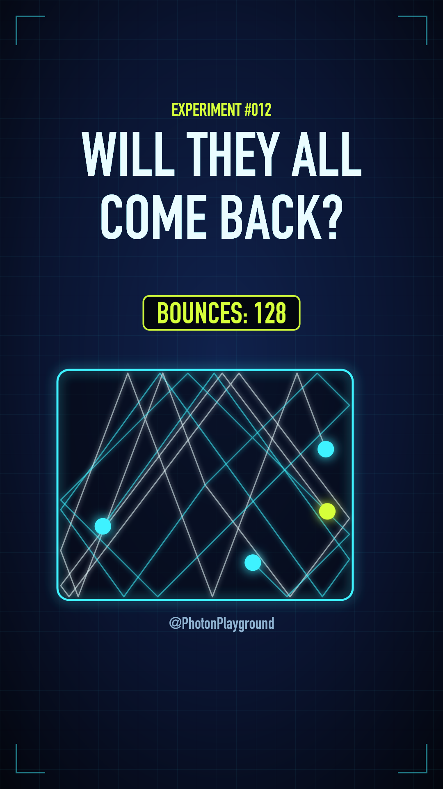
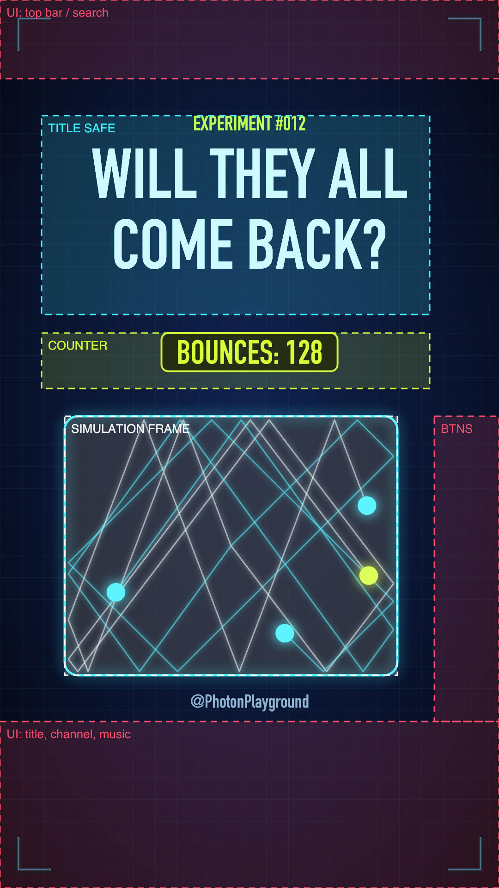
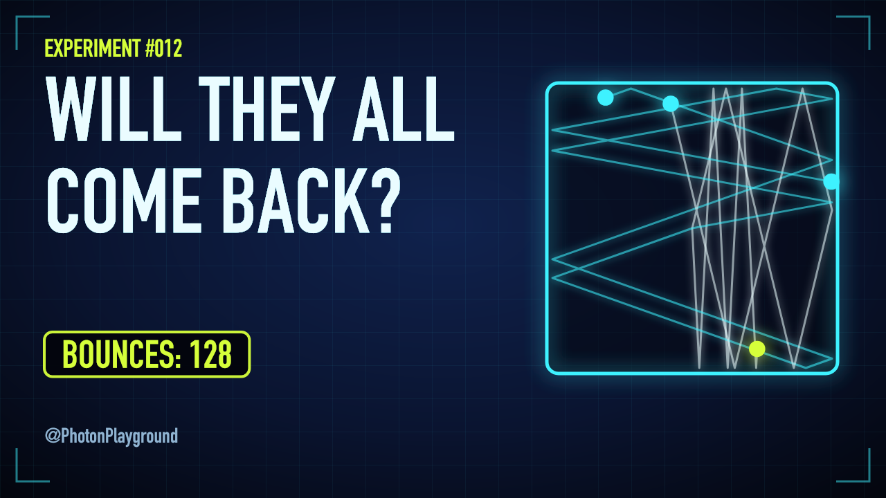
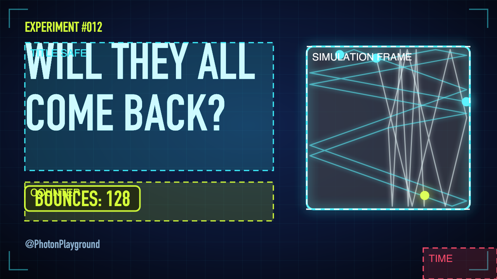

Photon Playground: brand preview
Generated by node branding/build.mjs from branding/brand.json. Simulations below approximate YouTube's crops.
Profile picture (800×800, shown cropped to a circle)
YouTube shows it at about 176 px on the channel page, 98 px in the upload preview, and 24–40 px next to comments and in the Shorts feed.
240 px
176 px
98 px
40 px
24 px
Banner (2560×1440): what each device shows
TV shows the full image. Desktop shows the full width × 423 px middle strip. Phones and tablets show only the 1546×423 safe area.
Phone / tablet (1546×423 safe area)
Photon Playground@PhotonPlayground
Desktop (2560×423 strip)
TV (full 2560×1440). Dashed box = safe area.
Watermark (150×150, transparent)
YouTube shows it at the bottom right of the player. Here it is shown at 44 px over different frames.
on black
on a light frame
on a busy frame
actual size, checkerboard = transparent
Shorts cover template (1080×1920)
Right: the same template with the guides. Red = covered by YouTube UI (approximate). Change the title and counter in brand.json → thumb.


Landscape thumbnail (1280×720)

